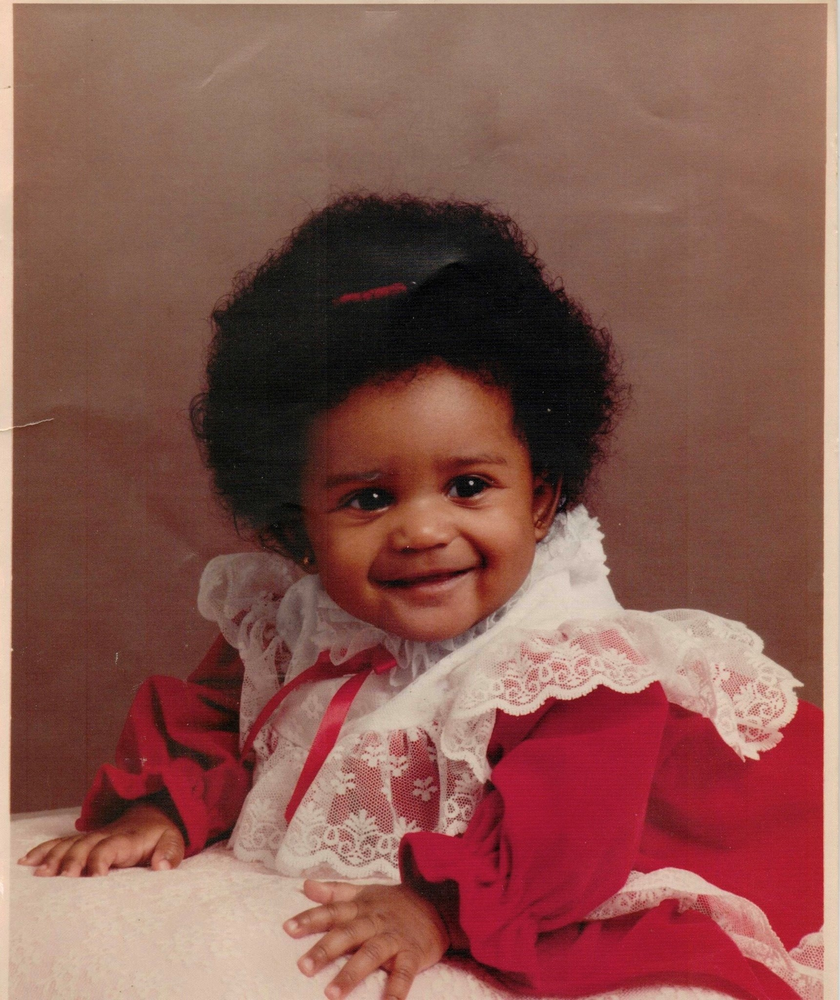
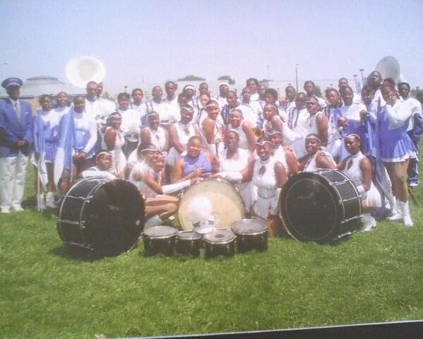
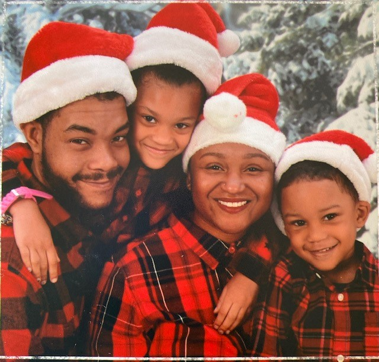

This is me! Awwww wasnt I just the CUTEST EVER?! And all that hair!! Mom loves to tell stories about how so many people use to stop her, just to touch my hair LOL :))

I was born August 3, 1988 and raised in the "SHOW ME STATE", St. Louis, MO to be exact.

I attended Vashon high school "Home of the Wolverines" and to be a inner city school it wasnt half bad!
I played in the marching band, I have so many memories and made life long friendships that I hold still till this day.


I was a drum major as well, along side one of my best friends :)

I married my BESTEST FRIEND in the world, May 28, 2010. And in 2013 we started our family. The best times in my adulthood.

Honestly, I could go on on about myself. Hey what can I say I am a Leo HA HA! We just talking about ourselves right?
Ok ok one more cool thing about me. I'm a CoderGirl!!